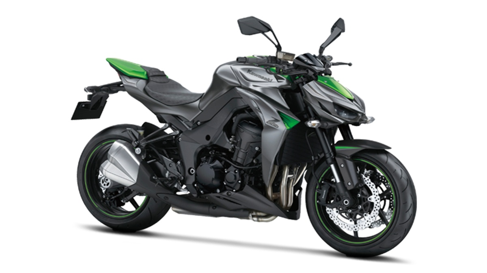

Kawasaki Z1000
Powered by a 1,043cc, liquid-cooled, 4-stroke, in line four engine,
the Z1000 R Edition was built to conquer lesser riders on the road.
Equipped with ABS, coupled by brembo brakes and calipers, the Z1000
R Edition boasts of incredible stopping power than can rival even the
strongest superbike.
Bike Specification
| Engine Type |
Max Power |
Front Brake |
Displacement |
No. of Cylinders |
Fuel Capacity |
Max Torque |
Rear Brake |
Body Type |
| n-Line Four, 4-Stroke, 16-Valves, DOHC Engine |
42 PS @ 10000 rpm |
Disc |
1043 cc |
17 L |
4 |
111 Nm @ 7300 rpm |
Disc |
Super Bikes |
Bike Features
| ABS |
Speedometer |
Tripmeter |
Tachometer |
LED Tail Light |
Odometer |
Fuel gauge |
| Dual Channel |
Digital |
Digital |
Digital |
Yes |
Digital |
Yes |